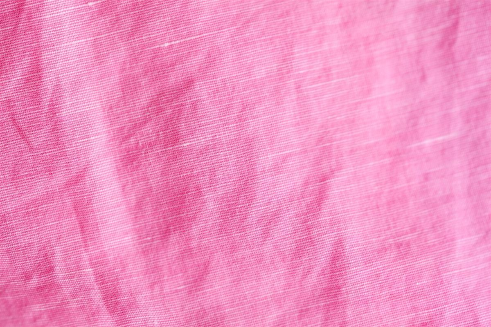
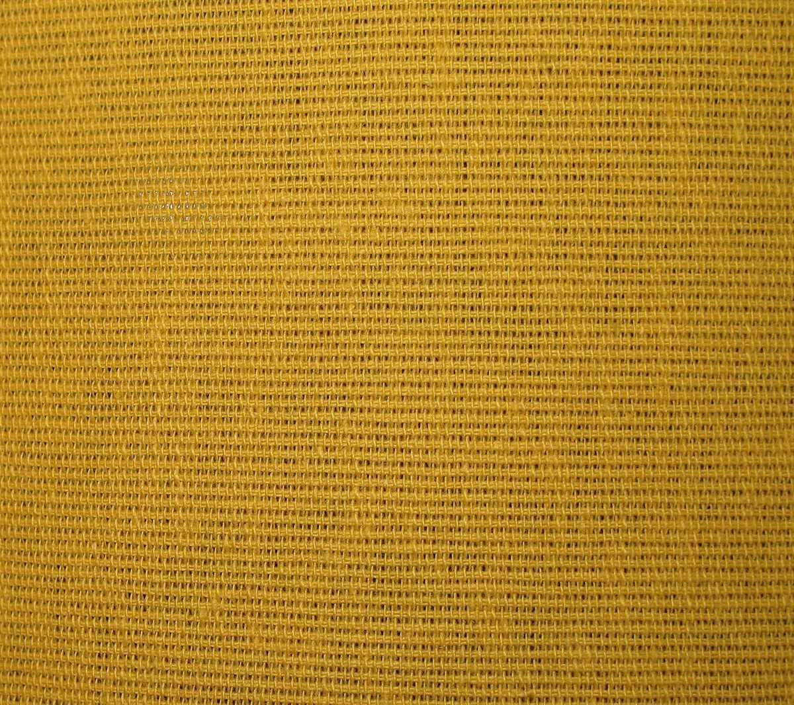
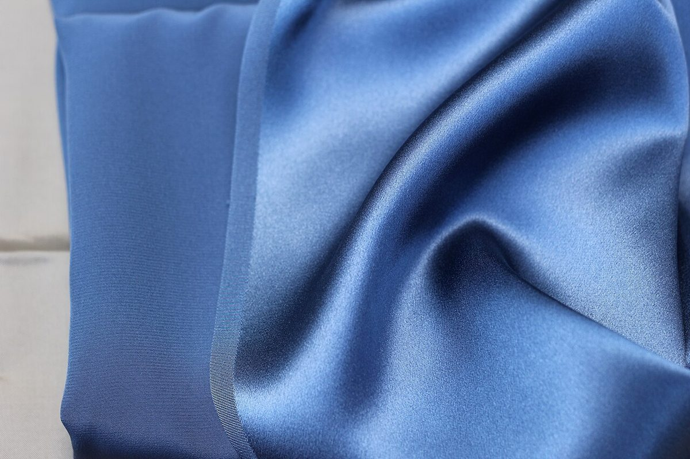

Sホーム
Sホーム
Mメニュー
O口コミ
C店のこと Oアクセス
Oアクセス制作側の連想
寄せる前(イメージ) 寄せたあと(イメージ)
「SMOCO」から、スモッキングを思い浮かべて
店名の由来は分かりません。制作側は、響きから「スモッキング」(布を等間隔に縫い寄せて、ひだを作る手芸)を連想しました。このページはその連想で、布を5本のひだに寄せた作りにしています。上の5本の帯は、5つのページへの入口です。お店の理念や由来とは関係のない、制作側の連想です。
- 青い綿
- 桃の織り
- からし色
- 青いサテン
布の写真は輪島市や実際のお店とは関係のない、国外・撮影地不明のフリー素材です。
ご案内
お店のこと(確認できたものだけ)
| 所在地 | 〒929-2372 石川県輪島市三井町洲衛１０−１１ |
|---|---|
| 電話 | 0768-23-4376 |
| 営業時間 | 準備中 |
| 定休日 | 準備中 |
| ご予約 | 準備中 |
| 駐車場 | 準備中 |
| SNS | Instagram @smoco_noto_2022 |